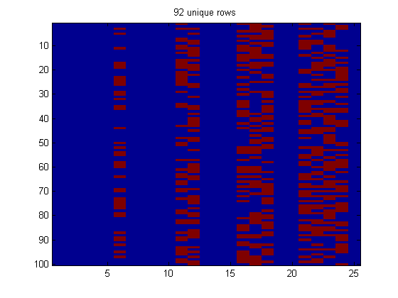
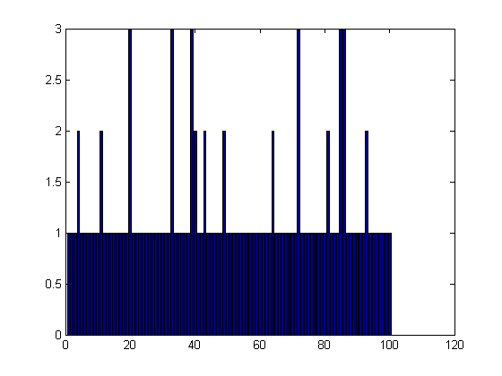

Strings, Cells, Structs, Containers, and Sets
In this section, we examine strings and string operations as well as two very important Matlab data structures: cell arrays, and structs. We also discuss the new (2008b) container.map hash table class, and various set-theoretic operations.
Contents
Character Arrays
Strings in Matlab are actually character matrices, which can be manipulated in very similar ways to numeric matrices.
A = ' This is Test String #1! ' B = A(1:5) % extract the first 5 characters C = [A ; A] % concatenate vertically D = repmat('@!',2,5) % replicate char arrays, just like numeric ones E = 'z':-1:'a' % create the matrices just like numeric ones. check = ischar(A) % is it a char array? F = isletter(A(1:6)) % which characters are letters? - returns a logical array G = isspace(A(1:6)) % which characters are spaces? - returns a logical array H = upper(A) % convert to upper case I = lower(A) % convert to lower case J = strtrim(A) % trim leading and trailing blank spaces. K = deblank(A) % trim trailing blank spaces only.
A =
This is Test String #1!
B =
This
C =
This is Test String #1!
This is Test String #1!
D =
@!@!@!@!@!
@!@!@!@!@!
E =
zyxwvutsrqponmlkjihgfedcba
check =
1
F =
0 1 1 1 1 0
G =
1 0 0 0 0 1
H =
THIS IS TEST STRING #1!
I =
this is test string #1!
J =
This is Test String #1!
K =
This is Test String #1!
The isstrprop() function can be used much like the isletter() or isspace() functions, allowing you to test which characters in a matrix belong to one of several different categories. Type doc isstrprop for the full list.
str = ' a1!' A = isstrprop(str,'punct') % punctuation B = isstrprop(str,'alphanum') % alpha or numeric characters C = isstrprop(str,'digit') % decimal digits D = isstrprop('3A','xdigit') % valid hexadecimal digits
str =
a1!
A =
0 0 0 1
B =
0 1 1 0
C =
0 0 1 0
D =
1 1
The char() and abs() functions convert from integers to the ascii equivalents and vice versa.
A = char(65) B = abs('B') C = abs('abcdefg')
A =
A
B =
66
C =
97 98 99 100 101 102 103
We can convert from string representations of hexadecimal or binary numbers to decimal numbers and back using the dec2hex() , hex2dec() , dec2bin(), and bin2dec() functions. The num2xxx and xxx2num functions operate on signed numbers.
A = dec2hex(211) B = hex2dec('D3') C = dec2bin(211) D = bin2dec('11010011')
A = D3 B = 211 C = 11010011 D = 211
We can also use the num2str() and mat2str() functions to generate string representations of numeric matrices. Or, parse a number from a string with str2num()
A = num2str([1:5;1:5]) %Takes an optional formatting string - see Formatting Strings section B = mat2str([1:5;1:5]) C = str2num('44')
A =
1 2 3 4 5
1 2 3 4 5
B =
[1 2 3 4 5;1 2 3 4 5]
C =
44
If the size of the strings match, we can concatenate vertically and horizontally just like numeric matrices. If not, we can either use the blanks() function to pad with blanks or the strcat() and strvcat() functions to concatenate, adding blanks for us.
C = strvcat('hello','this','is','a','test') %concatenate vertically size(C) class(C)
C =
hello
this
is
a
test
ans =
5 5
ans =
char
D = sortrows(C) % sort the rows alphabetically
D = a hello is test this
E = strjust(C) % justify the char array
E =
hello
this
is
a
test
Formatting Strings
The sprintf() and fprintf() functions can be used to format strings for output: sprintf() returns a string, while fprintf() directly displays the string, or writes it to a file, depending on the mode.
We pass these functions a string that includes place holders, (denoted by % signs) which will be replaced by corresponding values listed after the string. These place holders define how these values will be formatted. We use %s for a string, %d for a decimal digit, and %05.2f to indicate that we want a floating point number with 5 characters in total, two digits after the decimal point, and padded with zeros if necessary. There are many formatting options; Type doc sprintf for the full list. We can use escape characters like \n for a new line and \t for a tab. The examples will make this clearer.
fprintf('\n %s won the %s medal in the %s \n for his time of %05.2f seconds.\n',... 'Kosuke Kitajima','gold','100m breaststroke',60.08); str = sprintf('%07.4f',pi) % display pi to 4 decimals, 7 chars in total, padded with zeros. str = sprintf('%x',999) % display number in hexadecimal
Kosuke Kitajima won the gold medal in the 100m breaststroke for his time of 60.08 seconds. str = 03.1416 str = 3e7
Cell Arrays
In addition to matrices, Matlab supports another very general and powerful data structure, the cell array. Cell arrays can hold any type of Matlab object or structure including numeric matrices of different sizes, character arrays, other cells, as well as structs and objects, which we will see later. In fact, the same cell array can hold elements of different types. Cell arrays are frequently used to store strings, (i.e. char arrays of different sizes), which is why we discuss them here. Much of what was said about indexing matrices also applies to cells with one or two important differences.
We can create a cell array by using the cell() command
A = cell(2,4) % create a 2-by-4 cell array check = iscell(A) % really a cell?
A =
[] [] [] []
[] [] [] []
check =
1
or by enclosing an object or objects in curly braces
B = {[1,2,3],'hello',{1};[3;5],'yes',{'no'}} % add a bunch of objects to a cell array
B =
[1x3 double] 'hello' {1x1 cell}
[2x1 double] 'yes' {1x1 cell}
A 2-by-4 cell array is in fact made up of 8, 1-by-1 cell arrays, (simply called cells), which store the data. There are two ways to index into, (and assign into) a cell array: using () braces and using {} braces. Using the () braces, we access or assign cells. Using the the {} braces we access or assign the data within those cells.
C = B(1,2) % Returns a cell holding the string 'hello' size(C) class(C) D = B{1,2} % Returns the string itself. size(D) class(D) E = B(:,1) % Returns a cell array holding the first column
C =
'hello'
ans =
1 1
ans =
cell
D =
hello
ans =
1 5
ans =
char
E =
[1x3 double]
[2x1 double]
If we extract the data from more than one cell at once using the curly bracket indexing, Matlab returns each element one at a time much like a function that returns multiple values. We can assign each of these to new variables or perhaps pass them directly to a function expecting that many parameters.
[F,G] = B{:,1}
F =
1 2 3
G =
3
5
When assigning data, we must be careful what kind of brackets we use.
B(1,1) = {'test'} % must pass it a cell as we are using () brackets
B{1,1} = 'test' % same effect as line before.
B{1,2} = {'test'} % careful, this adds a cell to the cell at (1,2), (nesting cells)
H = B{1,2}{1} % to then extract it, we have to index twice.
B =
'test' 'hello' {1x1 cell}
[2x1 double] 'yes' {1x1 cell}
B =
'test' 'hello' {1x1 cell}
[2x1 double] 'yes' {1x1 cell}
B =
'test' {1x1 cell} {1x1 cell}
[2x1 double] 'yes' {1x1 cell}
H =
test
We can transpose,reshape,replicate, concatenate, and delete cell arrays just like matrices
I = B' % transpose J = reshape(B,1,6) % reshape K = [repmat(C,1,3);B] % replicate and concatenate K(end,:) = [] % delete
I =
'test' [2x1 double]
{1x1 cell} 'yes'
{1x1 cell} {1x1 cell }
J =
Columns 1 through 3
'test' [2x1 double] {1x1 cell}
Columns 4 through 6
'yes' {1x1 cell} {1x1 cell}
K =
'hello' 'hello' 'hello'
'test' {1x1 cell} {1x1 cell}
[2x1 double] 'yes' {1x1 cell}
K =
'hello' 'hello' 'hello'
'test' {1x1 cell} {1x1 cell}
Suppose we store numeric matrices of different sizes in a cell array.
A = {[1,2,3],[4,5],[6],[7,8,9,10]}
A =
Columns 1 through 3
[1x3 double] [1x2 double] [6]
Column 4
[1x4 double]
We can concatenate the entries themselves by first extracting all of the elements using the colon operator and then passing the results to the concatenation operator [].
B = [A{:}]
B =
Columns 1 through 7
1 2 3 4 5 6 7
Columns 8 through 10
8 9 10
We can also use the num2cell() , mat2cell() ,and cell2mat() functions to convert between matrices and cell arrays.
A = num2cell(1:5) % convert [1,2,3,4,5] to {[1],[2],[3],[4],[5]} M = reshape(1:32, 4, 8) B = mat2cell(M,[2,2],[3,3,2]) % partition matrix ones(4,8) into 6 cells celldisp(B) C = cell2mat(B) % inverse operation, (group together)
A =
[1] [2] [3] [4] [5]
M =
Columns 1 through 7
1 5 9 13 17 21 25
2 6 10 14 18 22 26
3 7 11 15 19 23 27
4 8 12 16 20 24 28
Column 8
29
30
31
32
B =
Columns 1 through 2
[2x3 double] [2x3 double]
[2x3 double] [2x3 double]
Column 3
[2x2 double]
[2x2 double]
B{1,1} =
1 5 9
2 6 10
B{2,1} =
3 7 11
4 8 12
B{1,2} =
13 17 21
14 18 22
B{2,2} =
15 19 23
16 20 24
B{1,3} =
25 29
26 30
B{2,3} =
27 31
28 32
C =
Columns 1 through 7
1 5 9 13 17 21 25
2 6 10 14 18 22 26
3 7 11 15 19 23 27
4 8 12 16 20 24 28
Column 8
29
30
31
32
We can convert from a character matrix to a cell array of strings, where each string is taken to be a row of the matrix, using the cellstr() command, and back again using the char() command.
A = strvcat('cell','array','example') % make a char array B = cellstr(A) % convert to a cell array of strings check = iscellstr(B) % check that its a cell array of strings C = char(B) % convert back to a char array
A =
cell
array
example
B =
'cell'
'array'
'example'
check =
1
C =
cell
array
example
The cellfun() function can be very useful when we want to apply a function to the data inside every cell. If the function returns values of the same size/type (eg. scalar) for every cell entry, we can write something like this
A = {'A ', 'test ', 'message, ', 'Which', 'contains ', '3 ','punctuation ' ,'marks!'}
f = @(str) isequal(str, lower(str)); % is lower case string?
B = cellfun(f,A)
A =
Columns 1 through 4
'A ' 'test ' 'message, ' 'Which'
Columns 5 through 7
'contains ' '3 ' 'punctuation '
Column 8
'marks!'
B =
Columns 1 through 7
0 1 1 0 1 1 1
Column 8
1
If the function returns values of variable size/type, we have to specify that the output is not uniform, as in this examples
f = @(str)str(isstrprop(str,'alphanum')); % function to remove non-alphanumeric chars B = cellfun(f,A,'uniformOutput',false)
B =
Columns 1 through 4
'A' 'test' 'message' 'Which'
Columns 5 through 7
'contains' '3' 'punctuation'
Column 8
'marks'
Here are two other ways of writing this which are more readable
B2 = cellfuncell(f, A) B3 = cell(1, length(A)); for i=1:length(A), B2{i} = f(A{i}); end B3
B2 =
Columns 1 through 4
'A' 'test' 'message' 'Which'
Columns 5 through 7
'contains' '3' 'punctuation'
Column 8
'marks'
B3 =
Columns 1 through 7
[] [] [] [] [] [] []
Column 8
[]
The cellfuncell function is not builtin, but is quite handy; it always returns a cell array.
String Matching
There are several functions we can use to compare strings.
A = 'testString'; test1 = strcmp(A,'testString') % compare two strings test2 = strcmpi(A,'TESTstring') % compare two strings but ignore case test3 = strncmp(A,'testFoo',4) % compare only the first 4 chars of two strings test4 = strncmpi(A,'TEST',4) % same as above, but ignore case.
test1 =
1
test2 =
1
test3 =
1
test4 =
1
We can find the occurrences of one substring inside another using the strfind() function, or search for all strings, (stored as rows in a matrix or cells in a cell array) that begin with a certain string, using the strmatch() function. We can also grab the first token in a char array delimited by spaces using the strtok() command, (the delimiter it uses can be changed).
str = 'actgcgctgacgctgatacacgggagctgacgactgaggacgagc'; A = strfind(str,'ctga')
A =
7 13 27 34
str2 = {'foobar','bar','barfoo','foofoo'};
B = strmatch('foo',str2)
B =
1
4
[token, remaining] = strtok('this is a test')
token = this remaining = is a test
Matlab also supports search and replace operations using regular expressions. Type doc regexp for numerous examples and useful functions.
Worked example of string processing
In the example below, we load Darwin's On the Origin of Species into a cell array, convert to lower case, remove the punctuation and any non-alpha characters, and sort the words by how frequently they occur in the text. The text is available in electronic form here.
tic % time how long this takes fid = fopen('darwin.txt'); % Open file text = textscan(fid,'%s'); % Grab every word and put it in a cell array fclose(fid); % Close file
%one big cell is returned, unwrap it and convert to lowercase
text = lower(text{:});
Nwords = numel(text)
Nwords =
209249
%delete any tokens that do not contain at least one alpha character noAlpha = cellfun(@(x)~any(x),isstrprop(text,'alpha')); text(noAlpha) = [];
%remove punctuation and any non-alpha characters puncRemover = @(str)str(isstrprop(str,'alpha')); text = cellfun(puncRemover,text,'UniformOutput',false);
%find the unique words (in alphabetical order) % and assign them numeric ids, which is the locn % of the last occurence of this word in the text. % wordOrder is a numeric encoding of text using tokens from numericIDs. [uniqueWords, numericIDs, wordOrder] = unique(text); numel(uniqueWords)
ans =
9996
%make sure the variables hold what we think they do.
assert(isequal(text,uniqueWords(wordOrder),text(numericIDs(wordOrder))));
%count how often each word occurs.
counts = histc(wordOrder,1:numel(uniqueWords));
%sort from most frequently occurring to least [frequency,order] = sort(counts,'descend'); %frequency = frequency / sum(frequency);
%list the words from most frequently occurring to least.
sortedWords = uniqueWords(order);
%create a cell array of the frequencies
freqcell = num2cell(frequency);
%create a formatted string array of the frequencies as percentages freqstring = num2str(100*frequency/sum(frequency),'%2.2f');
%add percentage signs and convert to a cell array freqstring = cellstr([freqstring,repmat('%',size(frequency,1),1)]);
%display the top 15 words with their percent frequencies.
display([sortedWords(1:15),freqstring(1:15,:)]);
toc
'the' '6.96%'
'of' '5.02%'
'and' '2.81%'
'in' '2.59%'
'to' '2.30%'
'a' '1.61%'
'that' '1.31%'
'as' '1.07%'
'have' '1.01%'
'be' '1.01%'
'is' '1.00%'
'on' '0.94%'
'species' '0.90%'
'by' '0.89%'
'which' '0.86%'
Elapsed time is 7.408428 seconds.
Set Operations
We can treat matrices and cell arrays as sets or multisets and perform various set operations with the functions union() , intersect() , setdiff() , setxor() , and ismember() .
set1 = 1:2:9 set2 = 1:4 int = intersect(set1,set2) uni = union(set1,set2) dif = setdiff(set1,set2) xor = setxor(set1,set2) check = ismember(3,set1)
set1 =
1 3 5 7 9
set2 =
1 2 3 4
int =
1 3
uni =
1 2 3 4 5 7 9
dif =
5 7 9
xor =
2 4 5 7 9
check =
1
set3 = {'alpha','beta','gamma'}
set4 = {'delta','beta','epsilon'}
intc = intersect(set3,set4)
check2 = ismember('delta',set4)
set3 =
'alpha' 'beta' 'gamma'
set4 =
'delta' 'beta' 'epsilon'
intc =
'beta'
check2 =
1
If we are taking the set difference of integers, it can be much faster to use the custom mysetdiff function, which uses logical indexing.
Or, perform basic quantification over logical arrays using the all() and any() commands: all() returns true if all of the inputs are true; whereas, any() returns true if at least one input is true.
forall = all(isprime(1:2:7)) exists = any(isprime(1:2:7))
forall =
0
exists =
1
We can also extract the unique elements of a cell array or matrix using the unique() function.
uniqueNums = unique([1,2,1,1,2,3,4,4,5,3,2,1]) % numeric matrix uniqueNames = {'Bob','Fred','Bob','Ed','Fred','Chris','Ed'} % cell array
uniqueNums =
1 2 3 4 5
uniqueNames =
Columns 1 through 5
'Bob' 'Fred' 'Bob' 'Ed' 'Fred'
Columns 6 through 7
'Chris' 'Ed'
This can be extended to unique rows of a matrix
A = ['bba';'bab';perms('aba');'aba'] % perms() generates every permutation [uniqueElems, firstIndices, perm] = unique(A,'rows'); % find unique rows of A sorted = issorted(uniqueElems,'rows') % are they sorted? - yes! check = isequal(A,uniqueElems(perm,:),A(firstIndices(perm),:))% note what each return var represents
A =
bba
bab
aba
aab
baa
baa
aba
aab
aba
sorted =
1
check =
1
Structs
In addition to matrices and cell arrays, Matlab supports structured arrays or structs, which allow you to organize data and access it by name. For those familiar with other programming languages, structs are basically hashmaps with string keys, but depending on how they are used, they can also operate much like a simple database. Structs, like cell arrays, can store anything you throw at them. Conversely, you can store structs in cell arrays and even within matrices so long as the fieldnames of the structs are the same.
We can create a struct by using the struct() function, passing it fieldnames and data in alternating order.
S = struct('time',0:5,'distance',0:2:10,'height',1:0.5:2) check = isstruct(S) % really a struct? names = fieldnames(S) % list the fieldnames check2 = isfield(S,'time') % check that 'time' is really a fieldname S = orderfields(S) % order the fields alphabetically S = rmfield(S,'height') % remove a field
S =
time: [0 1 2 3 4 5]
distance: [0 2 4 6 8 10]
height: [1 1.5000 2]
check =
1
names =
'time'
'distance'
'height'
check2 =
1
S =
distance: [0 2 4 6 8 10]
height: [1 1.5000 2]
time: [0 1 2 3 4 5]
S =
distance: [0 2 4 6 8 10]
time: [0 1 2 3 4 5]
Access the data using the . operator and the name of the field.
time = S.time
time =
0 1 2 3 4 5
Alternatively, we can use a string for the name, which allows us to access fields dynamically at runtime, much like a map.
distance = S.('distance') fieldname = 'distance' distance = S.(fieldname)
distance =
0 2 4 6 8 10
fieldname =
distance
distance =
0 2 4 6 8 10
We can set set a new value for a field
S.time = 2*S.time
S =
distance: [0 2 4 6 8 10]
time: [0 2 4 6 8 10]
or add new fields and data on the fly
S.newField = 'foo'
S =
distance: [0 2 4 6 8 10]
time: [0 2 4 6 8 10]
newField: 'foo'
When the names for the fields will be generated dynamically, (i.e. at runtime) it is often prudent to ensure that the string is a valid fieldname. Fieldnames must begin with a letter and can contain only letters, numbers and the underscore symbol. You can check that a string is valid with the isvarname() command and auto-generate a valid name from a source string with the genvarname() command.
test = isvarname('3alpha') better = genvarname('3alpha')
test =
0
better =
x3alpha
Struct arrays
We can create an array of structs all having the same fieldnames, which allows us to build a kind of database of entries.
S = struct('Name',{},'ID',{},'Position',{}); S(1).Name = 'Greg'; S(1).ID = '123'; S(1).Position = 'Manager'; S(2).Name = 'Ed' ; S(2).ID = '312'; S(2).Position = 'Clerk'; S(3).Name = 'Pete'; S(3).ID = '301'; S(3).Position = 'CEO';
We can then access an individual record, itself a struct,
EdsRecord = S(2)
EdsRecord =
Name: 'Ed'
ID: '312'
Position: 'Clerk'
Or access data across all of the records at once.
[gID,eID,pID] = S.ID
gID = 123 eID = 312 pID = 301
We can concatenate the output from the above command
A = [S.ID]
A = 123312301
However, when dealing with structures, its often more useful to concatenate vertically. We can do this by using the vertcat() function, which is the same function called when you concatenate with semicolons as in [A ; B]. Since we cannot control how we get the data from the struct, we sometimes have to call vertcat explicitly.
B = vertcat(S.ID)
B = 123 312 301
We can create structs from cell arrays using the cell2struct() function and, (possibly multidimensional), cell arrays from structs using the struct2cell() function.
data = {1,2,3,4};
fieldNames = {'one','two','three','four'};
dim = 2; %data for each fieldname is ordered along dim 2
S = cell2struct(data,fieldNames,dim)
S =
one: 1
two: 2
three: 3
four: 4
Here we give a more interesting example. We extend the Dawin example above by creating a structure from the words so that we can easily search for the frequency of particular words. This is basically a hashmap.
map = cell2struct(freqcell,sortedWords);
As a sanity check, we ensure that number of times a few chosen words occur in the text is the same as the frequency value stored in the map
testWord = {'origin','of','the','species','natural','selection'};
for i=1:numel(testWord)
f1 = sum(strcmp(testWord{i},text));
f2 = map.(testWord{i});
assert(f1==f2)
end
Containers.map
containers.Map are an implementation of a hash table. (If your matlab version is older than 2008b, see calling Java hash tables from Matlab.) The key can be a string or numeric scalar, the value can be anything. Here is an example, where we map from State name to City name.
US_Capitals = containers.Map( ... % create object {'Arizona', 'Nebraska', 'Nevada', 'New York', 'Georgia', 'Alaska'}, ... {'Phoenix', 'Lincoln', 'Carson City', 'Albany', 'Atlanta', 'Juneau'})
US_Capitals =
containers.Map handle
Package: containers
Properties:
Count: 6
KeyType: 'char'
ValueType: 'char'
keys(US_Capitals)
ans =
Columns 1 through 3
'Alaska' 'Arizona' 'Georgia'
Columns 4 through 6
'Nebraska' 'Nevada' 'New York'
values(US_Capitals)
ans =
Columns 1 through 3
'Juneau' 'Phoenix' 'Atlanta'
Columns 4 through 6
'Lincoln' 'Carson City' 'Albany'
US_Capitals('Vermont') = 'Montpelier'; % add one more entry
query = 'Vermont'; fprintf('capital of %s is %s\n', query, US_Capitals(query));
capital of Vermont is Montpelier
try query = 'Texas'; fprintf('capital of %s is %s\n', query, US_Capitals(query)); catch ME warning(ME.message) end
Warning: The specified key is not present in this container.
To prevents errors when looking up unknown keys, you can use something like this:
if ~isKey(US_Capitals,query) fprintf('don''t know capital of %s\n', query) else fprintf('capital of %s is %s\n', query, US_Capitals(query)); end
don't know capital of Texas
Here is a slightly more complex example. We create several random graphs, represented as adjacency matrices, and we count how many times we generate each one.
d = 5; graphToKey = @(G) num2str(find(G));% each row is a string encoding of the edge number graphsVisited = containers.Map; rand('state',1); N = 100; keep = zeros(N, d*d); for i=1:N G = triu(rand(d,d) > 0.5, 1); key = graphToKey(G); if ~isKey(graphsVisited, key) graphsVisited(key) = 1; else graphsVisited(key) = graphsVisited(key)+1; end keep(i,:) = G(:)'; % for debugging end
Now check it worked
Nunique = length(unique(keep,'rows')); assert(Nunique == length(keys(graphsVisited))); figure; imagesc(keep); title(sprintf('%d unique rows', Nunique)); for i=1:N mask = (repmat(keep(i,:),N,1)==keep); % compare row i to all others cnt(i) = sum(all(mask,2)); % count how many rows perfectly match this one key = graphToKey(reshape(keep(i,:),d,d)); cnt2(i) = graphsVisited(key); end assert(isequal(cnt, cnt2)) figure; bar(cnt) 